1. First water test
We began by proving that a simple platform could float, move, and survive a controlled pool test.
Robot build story
We started with a simple test platform and built toward a more complete autonomous underwater vehicle through CAD, fabrication, electronics integration, software development, and pool testing.
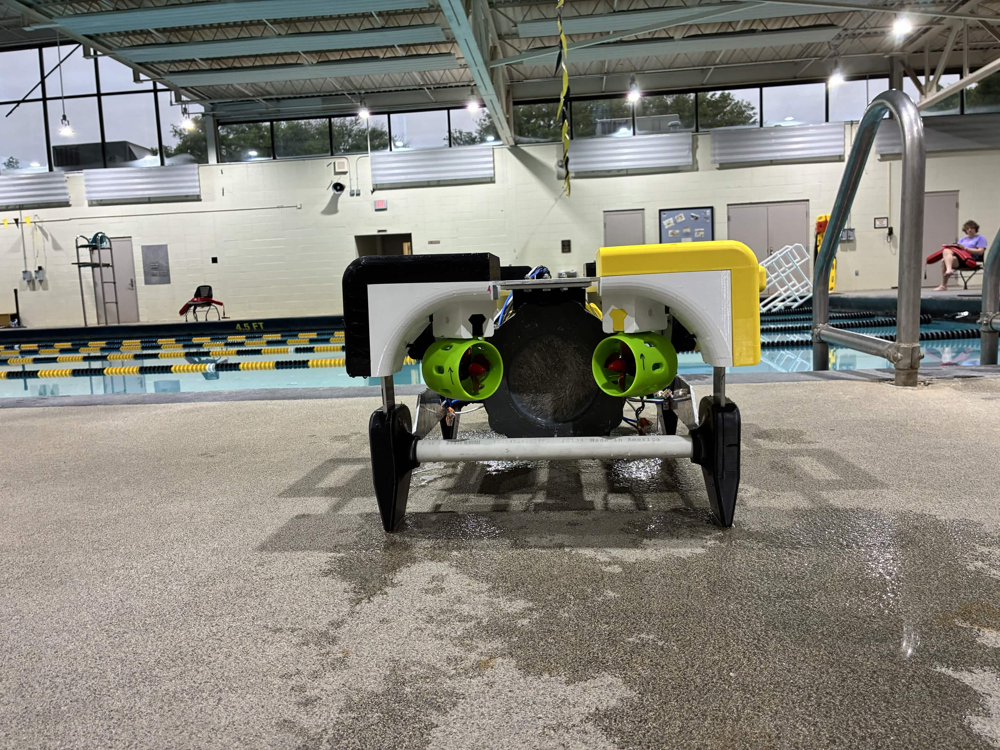
Build journey
Our robot did not appear all at once. We worked through small test rigs, early frame concepts, electronics bring-up, CAD revisions, fabrication, and pool validation.
We began by proving that a simple platform could float, move, and survive a controlled pool test.
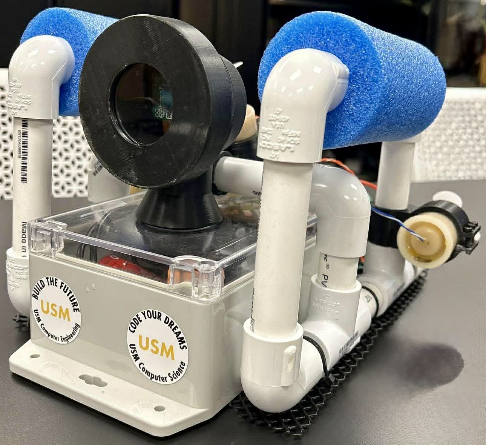
We built an early body to test camera position, basic structure, wiring paths, and how components fit together.

We connected ESCs, thrusters, power, and control hardware on the bench before trusting the system in water.

We cut and prepared frame pieces so the vehicle could move beyond temporary prototype geometry.

We assembled the current parts, checked clearances, and made the robot easier to service between tests.
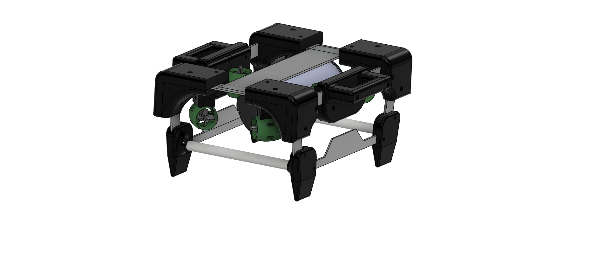
We used CAD to capture the current design and guide the next frame, mount, and packaging decisions.

We brought the current robot poolside to evaluate the complete system as a vehicle, not just separate parts.
Phase 0
Our first platform was intentionally simple. It helped us see how flotation, drag, camera placement, cables, and thrusters behaved in the pool before we committed to a more refined frame.

Prototype foundation
These first builds gave us something real to test, break down, and improve.
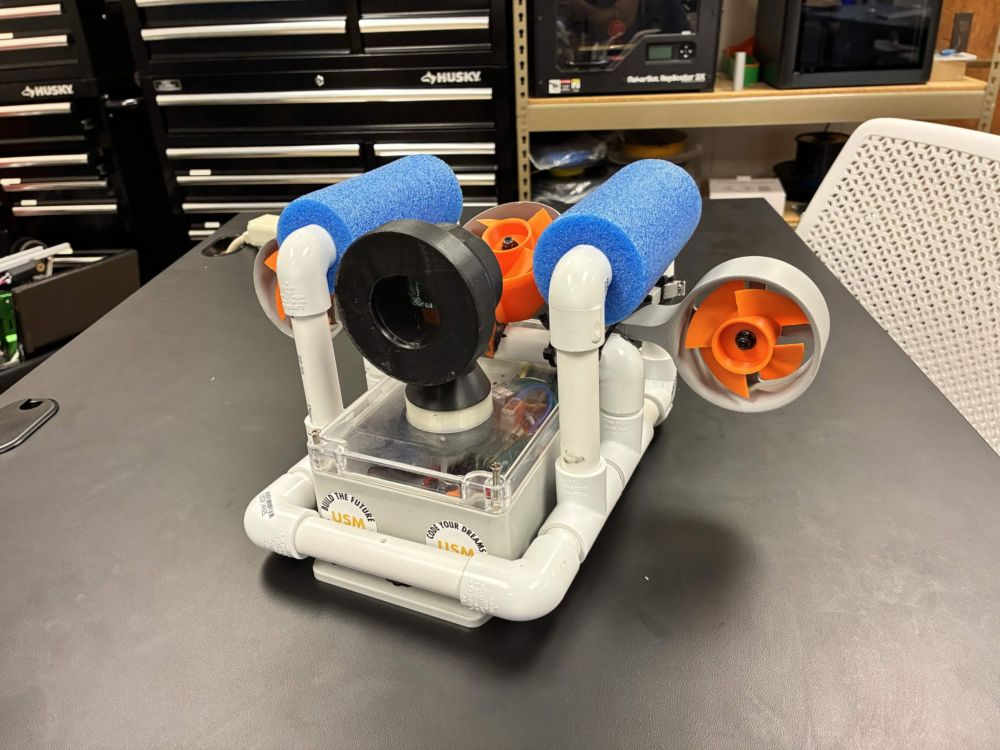
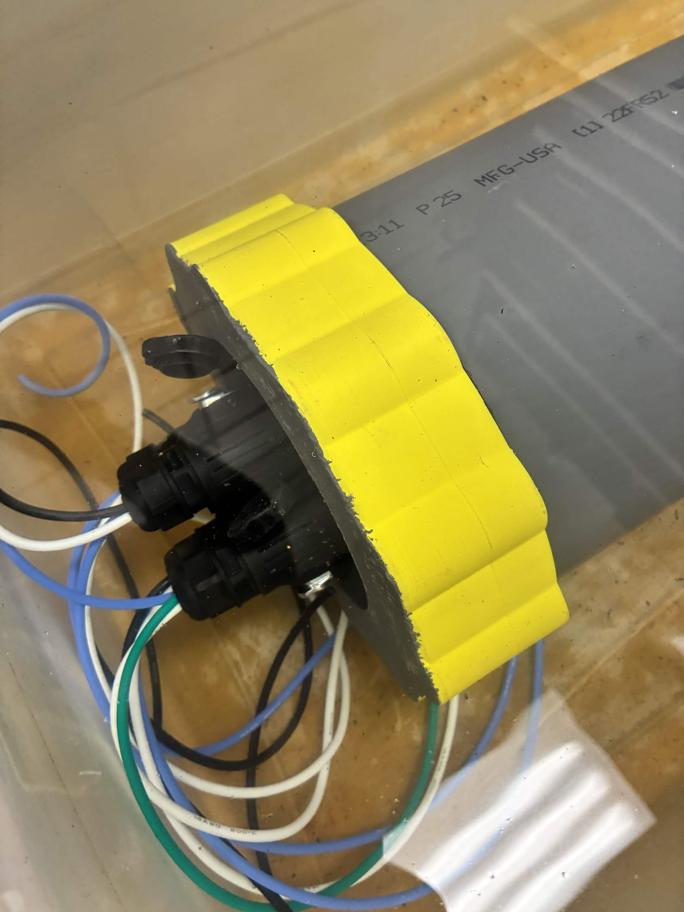
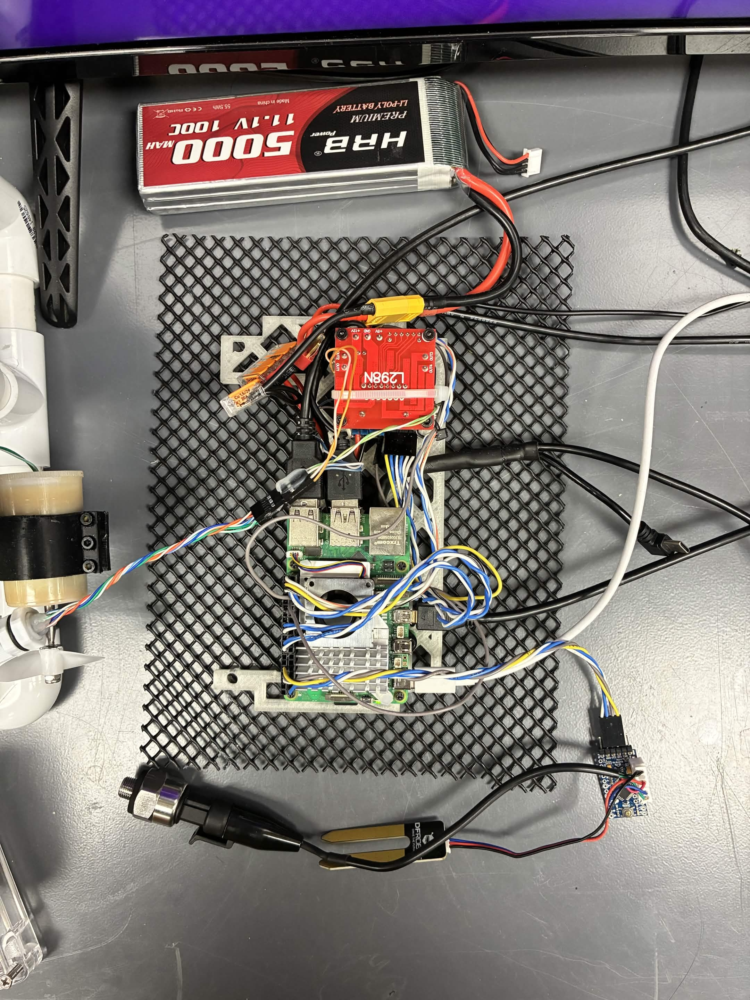
Electronics and controls
Before pool testing, we brought up ESCs, thrusters, wiring, compute hardware, and power distribution in the lab. That bench work lets us isolate electrical and control issues before they become water-test problems.
Mechanical development
As the robot matured, we shifted from temporary structure to a more intentional frame with better access, mounting, and durability.
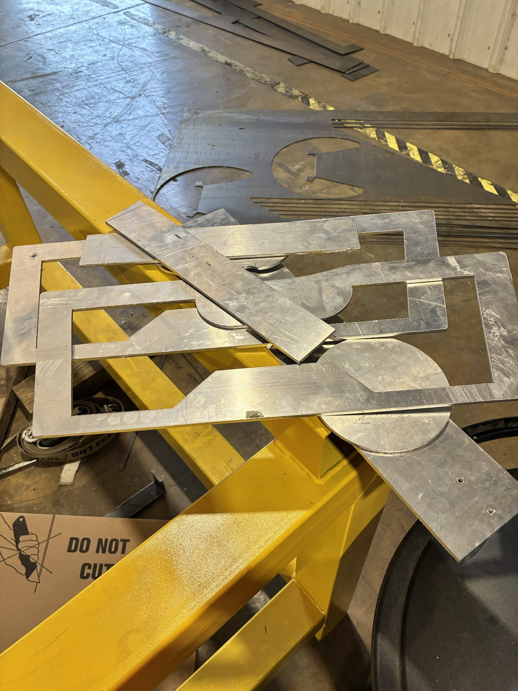
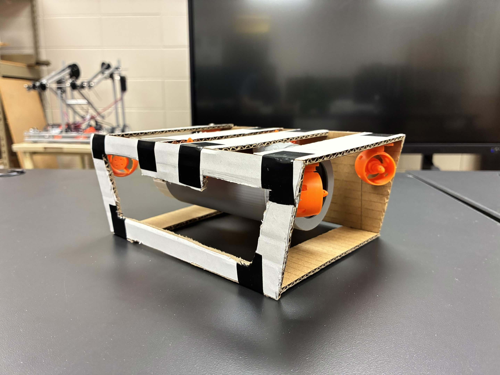
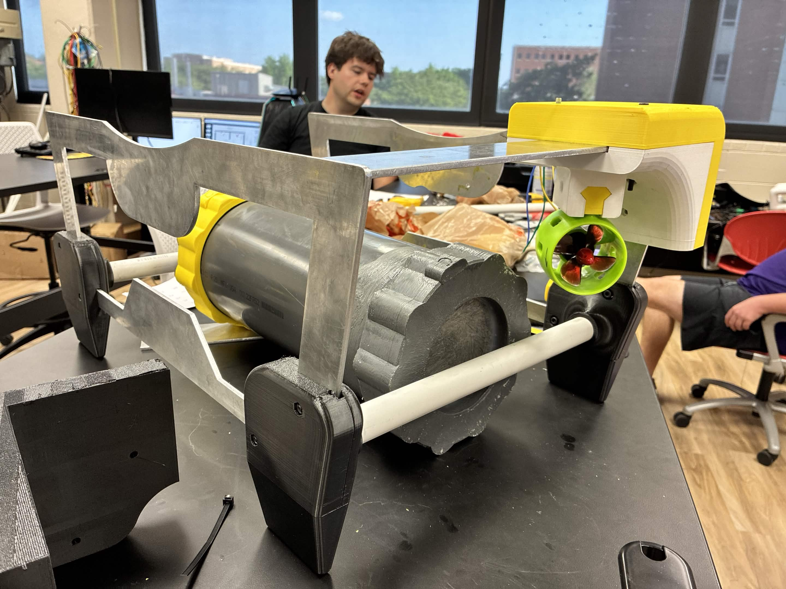
CAD model
The CAD model documents what we have learned from fabrication and pool testing. It helps us plan thruster placement, hull position, electronics access, and future sensor mounts before we cut new parts.

Current system
Our current platform brings together the physical frame, propulsion, electronics, and software workflow into a robot we can test as a complete vehicle.

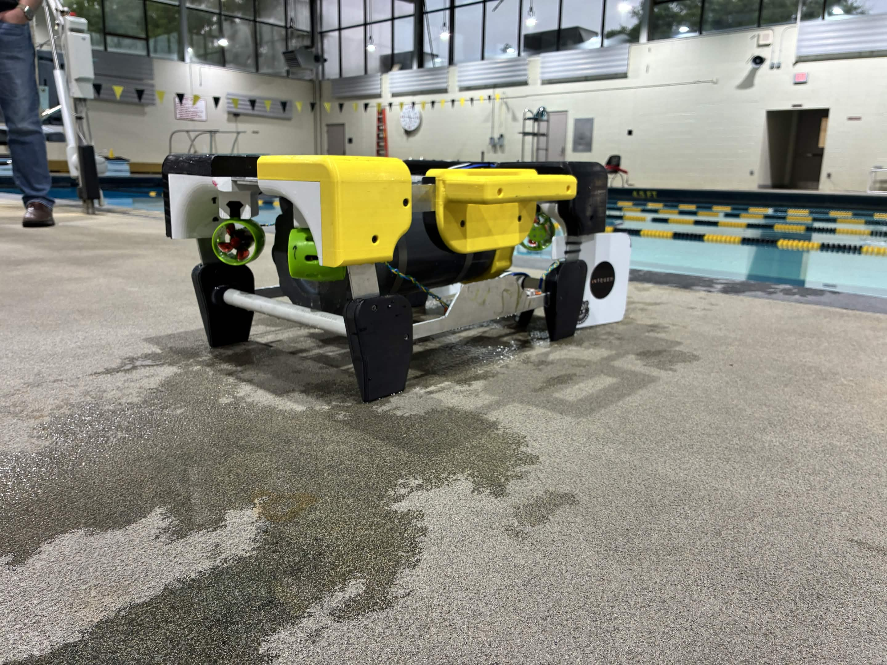
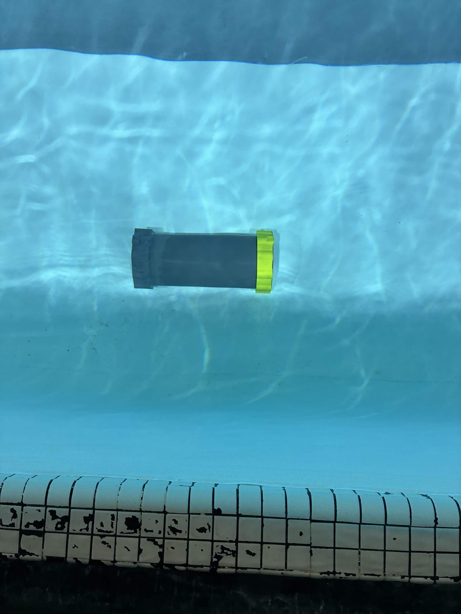